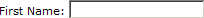
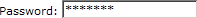
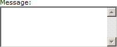

XForms 输入控件
XForms 的用户界面使用 XForms 控件。
XForms 控件
XForms 中的用户界面元素被称为 XForms 控件。
最常用的控件元素是 <input> 和 <submit>。
每个控件元素均有 ref 属性指回 XForms 的数据模型。
独立于设备的控件
理解 XForms 用户界面并不会确切地描述如何显示 XForms 控件是很重要。
由于 XForms 是独立于平台和设备的，XForms 把如何显示这些空间的权利留给了浏览器。
正因如此，XForms 可被用于所有类型的设备，个人电脑，移动电话、手持计算机等等。XForms 同时也是为残障人士定义用户界面的完美解决方案。
input 控件
input 控件是最常用的 XForms 控件。它用于输入一行文本：
<input ref="name/fname"> <label>First Name</label> </input>
大多数时候，input 控件会被显示为类似这样的输入域：
Try it yourself
<label> 元素
<label> 元素是所有 XForms 输入控件的强制子元素。
这一点的原因是为了确保表单可用于所有类型的设备 (因为标签可通过不同的方式来处理。）对于语音软件，标签可被读出，而对于某些手持设备，标签必须一屏接一屏的跟随输入。
Secret 控件
Secret 控件是 input 空间的特殊变体，被设计用于输入密码或其他隐藏的信息：
<secret ref="name/password"> <label>Password:</label> </secret>
大多数时候，secret 控件会显示为这样一个输入域：
Textarea 控件
Textarea 控件用于多行的输入：
<textarea ref="message"> <label>Message</label> </textarea>
textarea 控件可显示为这样的输入域：
Submit 控件
Submit 控件用于提交数据：
<submit submission="form1"> <label>Submit</label> </submit>
Trigger 控件
trigger 控件用于触发某个动作：
<trigger ref="calculate"> <label>Calculate!</label> </trigger>
Output 控件：
output 空间用于显示 XForms 数据：
<p>First Name: <output ref="name/fname" /></p> <p>Last Name: <output ref="name/lname" /></p>
上面的例子仅仅可输出 XForms XML 文档 (XForms 实例）中的 <fname> and <lname> 节点的内容：
<instance>
<person>
<name>
<fname>David</fname>
<lname>Smith</lname>
</name>
</person>
</instance>
显示为这样：
First Name: David Last Name: Smith
Try it yourself
Upload 控件
upload 控件是为向服务器上传文件而设计的：
<upload bind="name"> <label>File to upload:</label> <filename bind="file"/> <mediatype bind="media"/> </upload>